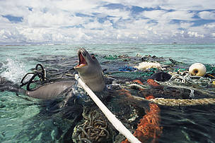
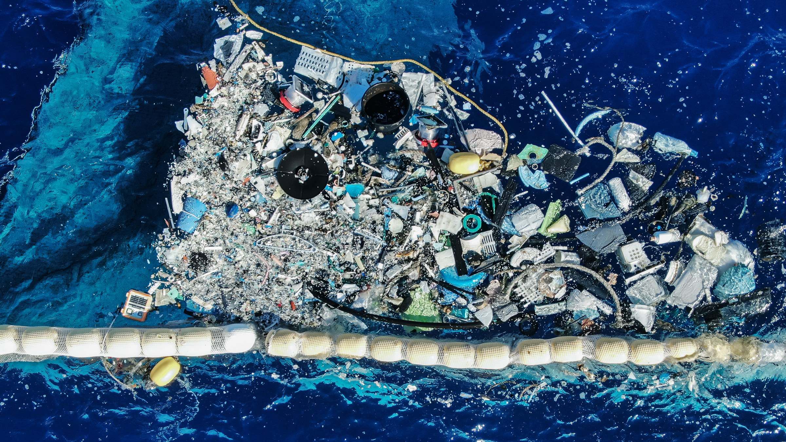

El Plastico en el Oceano
¿Cómo afecta el plástico a los océanos y a su fauna?
Segun la WWF las botellas de plástico, colillas, bolsas y sorbetes que se alojan en el océano afectan a más de 700 especies marinas cada año.
Los animales pueden confundir una bolsa de plástico con comida, y este material bloquea el tracto digestivo porque no es posible digerirlo. Otra de las consecuencias se da en enredos, asfixias y estrangulación: Cuando los hilos de pescar o los retazos de plástico se atracan en las extremidades de los animales, causan daños profundos.


- Tortugas Marinas
- Focas
- Delfines
- Ballenas
- Peces
- Crustaceos
- Albatros
- Gaviotas
Los océanos abarcan más de
700.000 especies.
Menos de un
3%
de los océanos están protegidos.
Los océanos han absorbido más del
93%
del calor extra producido por el ser humano desde los años 70.
El problema:
Los beneficios que los océanos nos brindan en nuestro día a día son innumerables: influyen en los fenómenos meteorológicos más importantes, regulan el clima, producen el oxígeno que respiramos y son los corredores de migración de ballenas, tiburones, tortugas y otras especies.
Pero, por sorprendente que parezca, dos tercios del agua de mares y océanos —la mitad del planeta en términos absolutos— son aguas internacionales en las que no existe regulación alguna sobre la protección de su biodiversidad. De la gestión sostenible de los océanos depende el futuro de la humanidad.
La pesca insostenible e ilegal, la gestión costera, el tráfico marítimo, la contaminación y los efectos del cambio climático llevan décadas amenazando profundamente a nuestro medio marino. La riqueza del fondo marino, sus ecosistemas y diversidad están en riesgo. Muchos organismos, como el coral, el plancton y los crustáceos, son muy sensibles a los efectos de la acidificación del océano, que unido al calentamiento global pueden llevar a impactos irreversibles para todas las especies, entre ellas la humana.
